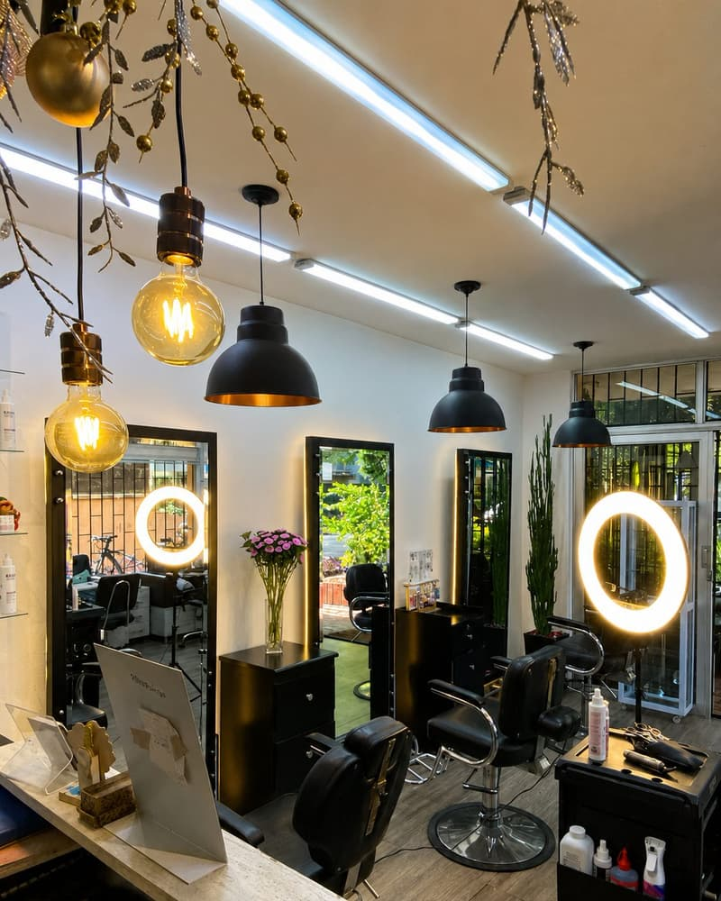
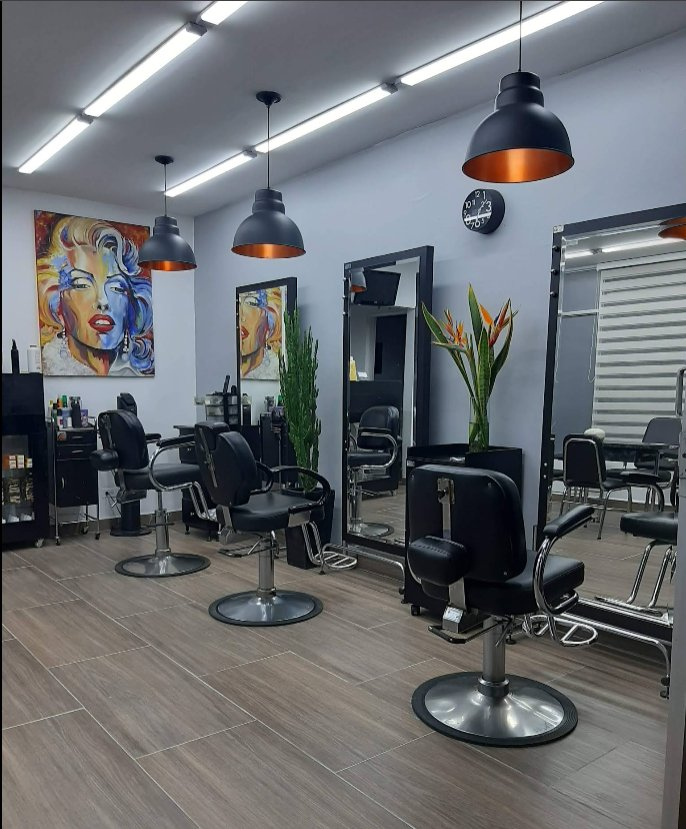
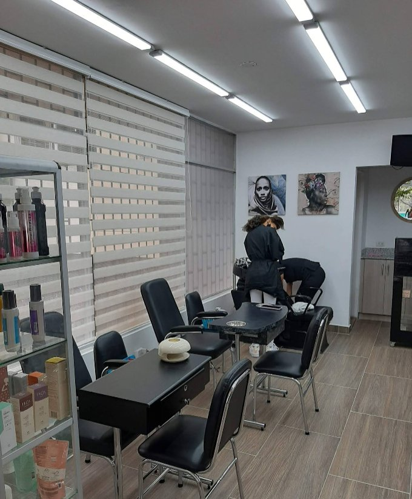
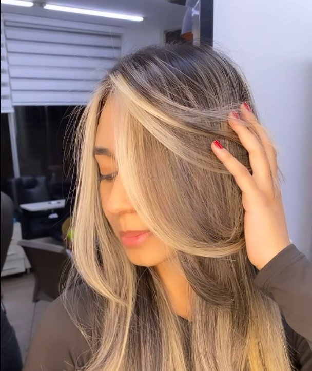
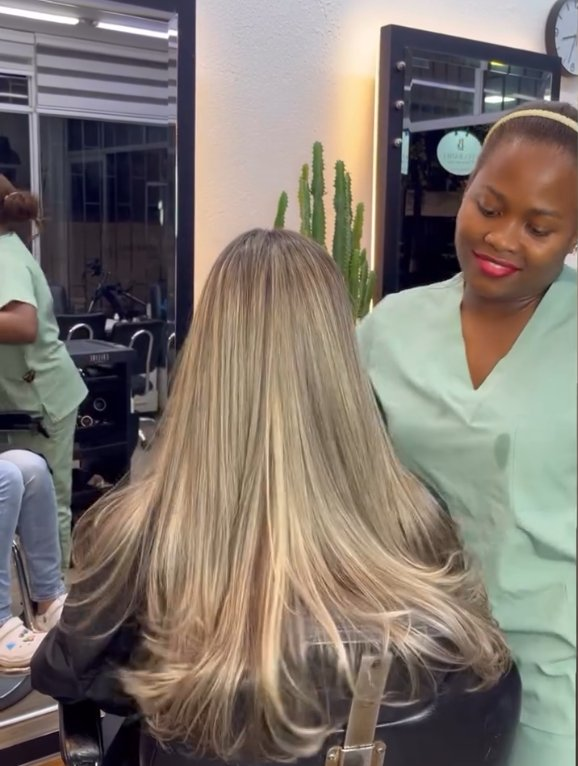
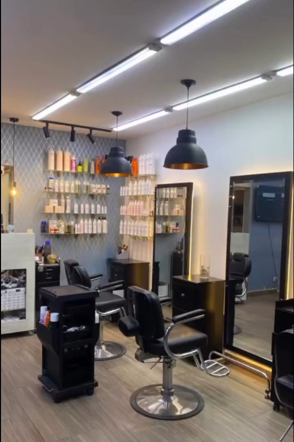
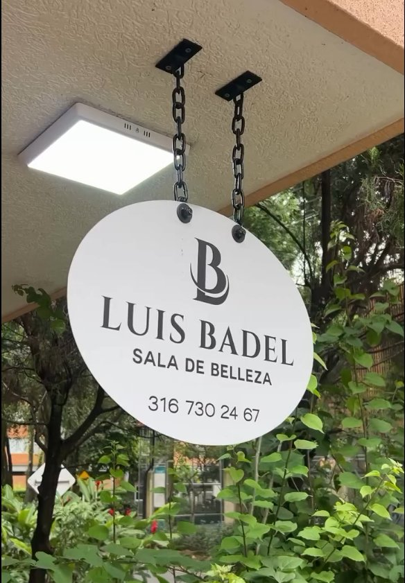

Corte y Estilizado
Cortes a la medida de tu rostro, tipo de cabello y rutina diaria, con acabado profesional y secado incluido.
Desde$45.000 COP
Más de 18 años creando cortes, color y looks que se sienten tan bien como se ven. Un estudio de belleza de barrio, con estándar de salón premium.

18+
Años de trayectoria
06
Especialidades
100%
Productos profesionales
1:1
Atención personalizada
En Luis Badel Sala de Belleza no replicamos tendencias: las adaptamos a tu rostro, tu cabello y tu forma de vivir. Cada cita empieza con una conversación, no con un molde — porque el mejor corte es el que se ve bien incluso el día que no te peinas.
Seis especialidades, un mismo nivel de detalle. Deslizá o usá las flechas para ver el catálogo completo.
Cortes a la medida de tu rostro, tipo de cabello y rutina diaria, con acabado profesional y secado incluido.
Tinturas, mechas, balayage y técnicas de iluminación natural, con asesoría de tono según tu piel.
Alisados, hidratación profunda y reconstrucción capilar para devolverle brillo y salud a tu cabello.
Cuidado completo de manos y pies, esmaltado tradicional o semipermanente y spa de manos.
Cortes clásicos y modernos, diseño de barba, afeitado y perfilado con navaja.
Recogidos, ondas y peinados de fiesta para esa ocasión que merece un look impecable.






Detrás de cada cita hay un equipo de estilistas integrales con más de 18 años de trayectoria en Medellín, especializado en corte, color y técnicas de balayage. Formados en el día a día del salón, creen que la mejor herramienta no es la tijera ni el tinte: es escuchar a quien tiene enfrente.
Nuestro sello: looks que se mantienen, colores que envejecen bien y un trato cercano que convierte cada visita en una pausa, no en un trámite.
"Llevo años yendo donde Luis y siempre salgo con el cabello más sano que cuando entré. El balayage que me hizo fue exactamente lo que quería."
"El tratamiento de keratina me devolvió el brillo que sentía perdido. Además el ambiente del salón es súper tranquilo, se siente como una pausa en el día."
"Fui por un corte para un evento y terminé agendando mi peinado mensual. Atención puntual, profesional y de muy buen trato."
Trabajamos preferiblemente con cita previa para garantizarte el horario y el estilista que prefieras. Si tenés disponibilidad de último momento, escribinos por WhatsApp y te confirmamos si podemos atenderte por orden de llegada ese día.
Estamos en el barrio Los Colores, Laureles, sobre la Cra. 78, una zona residencial con parqueo en vía y parqueaderos públicos a pocos metros. Si venís en moto o carro, escribinos y te orientamos sobre la mejor opción cercana.
Trabajamos exclusivamente con líneas profesionales de colorimetría y tratamiento capilar, seleccionadas según el tipo de cabello y el resultado que buscás. En tu valoración te explicamos qué producto usaremos y por qué, sin sorpresas.
Depende del largo y el estado de tu cabello, pero un color completo o un balayage suele tomar entre 2 y 4 horas. Al agendar te damos un estimado de tiempo para que organices tu día con tranquilidad.
Escribinos contándonos qué servicio buscás y te confirmamos disponibilidad. Sin formularios largos, sin esperas.
| Lunes – Viernes | 9:00 a.m. – 5:00 p.m. |
| Sábado | 9:00 a.m. – 5:00 p.m. |
| Domingo | Cerrado |
Cra. 78 #54-75, barrio Los Colores, Laureles - Estadio, Medellín, Antioquia.